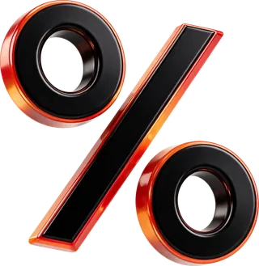
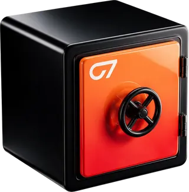

01
Desconto de 80%
Mais estrutura para o seu operacional, investindo menos.

Vitrine da fundação (não sobe para o servidor). Os estados hover, foco e ativo aparecem congelados com as mesmas regras do CSS real; passe o mouse ou use Tab para ver ao vivo.
--raio-assinatura--raio-card--raio-gota--raio-palco--raio-sm--raio-chipA maior black da história.
Plus Jakarta Sans 800 · tracking -.045em · só H1 da hero e frase do fechamento. O ponto final leva margin-left -.07em.
Barlow Condensed 700–900 em caixa alta · títulos de seção, nomes de plano, rótulos e números.
.fbtn normal
.fbtn--block · largura total (planos)
.lbtn normal
.ibtn
Laranja sólido com volume (luz em cima, brilho âmbar por dentro na base), moldura fina de vidro em volta seguindo o raio diagonal, seta laranja na gota branca. No hover sobe 1px, a moldura acende e uma varredura de luz atravessa uma vez.
.tag · quadradinho laranja com raio 3px 0 + caixa alta, tracking .18em
Mais estrutura para o seu operacional, investindo menos.

Ao passar para a conta real, todo o lucro é seu.

.card-z normal e em hover (borda .14, linha de luz no topo, 3D sobe 6px com -3°)
.selo-hero · 1.12em de um H1 de 116px
.selo-plano · 74px, 12°
Um único <symbol id="selo-serrilhado"> (polígono de 36 pontos) no index.html, usado com <use>. Esta vitrine busca o sprite do index.html em vez de copiá-lo.
.div-candles · a seção sobe recortada (home Zero7), topos acesos
.div-picote · a borda rasga como ingresso
.grade · 72px.grade com máscara radial.grao (em base.css) cobre a página inteira em soft-light, por cima de tudo, sem capturar clique: é o grão que se vê nesta vitrine.